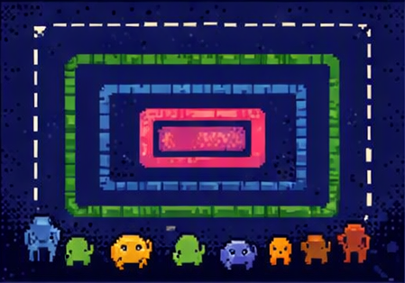
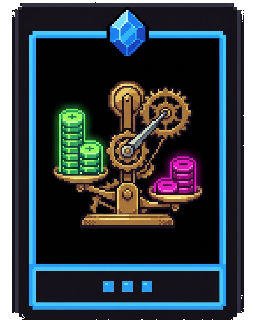
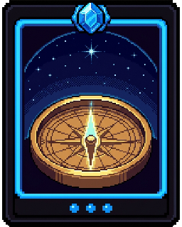
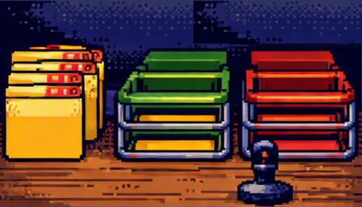
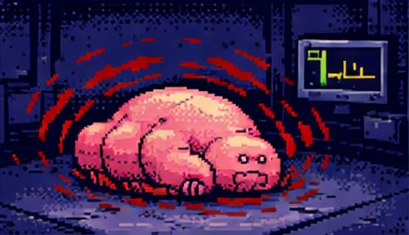
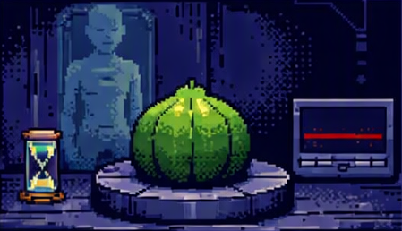
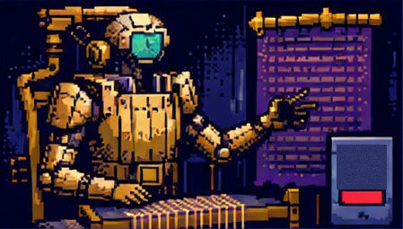
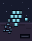
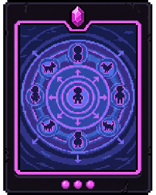
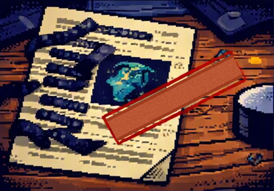

The Ambassador's Manifest
Welcome aboard the survey ship Charitable Interpretation. You are the new Moral Status Officer. Your predecessor left in a hurry, and left seven dossiers unfiled.
Use → (or Next) to advance and to reveal points one at a time. F = fullscreen.
The Job Description
Treaty law is blunt about it. Nothing found out here may be contacted, farmed, dissected, collected, or switched off until you have filed its status.
- You are not deciding whether a thing is useful, dangerous, or likeable. The captain has officers for that.
- You are deciding one thing: does it count? Does the crew owe it anything for its own sake?
- Get it wrong in one direction and you enslave someone. Get it wrong in the other and you halt a mining survey for a rock.
Before Your First Shift
Five gut-checks — no right answers. File where you stand now; you'll see these again when the manifest is complete.
If something can suffer, that alone means we owe it something.
Being human is what gives a being full moral status.
A being that will become a person should be treated as one now.
If we cannot tell whether something has an inner life, we should assume it doesn't.
Some beings count more than others.
Damaged vs. Wronged
A thing has moral status when it can be wronged — when it matters in its own right, and not merely because of what it's worth to someone else.
- Smash the ship's coffee machine and you've done something bad — you've damaged the crew's property. The machine has no complaint.
- Smash the ship's cat and you've done something bad to the cat. There's someone there for it to be bad for.
- That's the whole question: is there anyone home for it to be bad for? Philosophers call whoever's home a moral patient.
Agents and Patients
Your predecessor's one useful note, taped inside the desk drawer:
Can weigh reasons, choose, and be held responsible. We blame them, praise them, put them on trial.
The captain. You. Any adult who could have chosen otherwise.
Can be treated well or badly. We owe them things — but we never put them on trial for anything.
An infant. A dog. Anyone under anesthesia.
- Every agent is also a patient. Not every patient is an agent — and that asymmetry does enormous work.
- A hurricane is neither. It can flatten a colony and still be nobody's fault and nobody's victim.
Bridge Quiz, 0400 Hours
A moral agent, since it acted and caused real harm to a person
Neither an agent nor a patient — it is simply a force of nature
A moral patient but not a moral agent: it can be wronged, not blamed
The Form on the Desk
Someone asked your question first. In 1973 Mary Anne Warren opened a paper on abortion by imagining a space explorer captured by beings who may or may not be persons. How would she tell?
- Her answer is a checklist — five marks of personhood: consciousness, reasoning, self-motivated activity, communication, self-awareness.
- It's printed on every dossier on your desk. Five boxes. Tick what applies.
- Warren's caution: it tests for personhood, not for who may be treated any old way. She thought other principles covered animals.
- And the form isn't neutral. It assumes personhood is what makes a being count — and three of your five delegates say that's the wrong theory.

Where Do You Draw the Circle?
Everyone agrees some things count and some don't. The fight is over the line. Five criteria sit before the treaty council:
- Species membership — it counts if it's one of us.
- Sentience — it counts if it can feel: pleasure, pain, fear, comfort.
- Rationality — it counts if it can reason, plan, and set ends for itself.
- Relationships — it counts if it stands in real relations of care and dependence. Midgley's mixed community: shared millennia bind us.
- Reciprocity — it counts if it can join a scheme of mutual advantage: promises kept, give and take. The contractualist's criterion, Hobbes through Rawls.
- Each sounds reasonable alone. They come apart the instant you meet something strange.

Delegate One: The Sentientist
She quotes an old Earth footnote from Jeremy Bentham (1789), written about animals:
- "The question is not, Can they reason? nor, Can they talk? but, Can they suffer?"
- The reasoning: if a being has interests — things that go well or badly for it — then ignoring those interests ignores something real. Sentience is what makes an interest possible at all.
- Peter Singer sharpens this into equal consideration of interests: a given amount of pain counts the same whoever's pain it is. Not equal treatment — a pig has no interest in voting — but equal weighting.
- Cheap consequence: intelligence is irrelevant. Being clever earns you no extra protection from pain.

Delegate Two: The Kantian
He is unimpressed by suffering as a criterion, and quotes Immanuel Kant:
- Act so as to treat humanity "always as an end, never merely as a means." What earns that protection isn't feeling — it's being a rational agent who sets their own ends.
- Persons have dignity, which has no price and admits of no trade. Everything else has a price and can be traded away.
- Consequence: on the strict view, animals fall outside the circle. Kant allowed only an indirect duty — don't torture the dog, because cruelty coarsens you.
- Most people find that verdict hard to swallow. Hold onto the discomfort; it turns into an argument later.
Filing Vocabulary
A being has moral status when it can be wronged in its own right.
Anything that can be wronged is a moral patient;
only a being that can be held responsible is also a moral
agent.
Bentham's proposed criterion is sentience,
Kant's is rationality,
and Warren's five-mark checklist is a test for
personhood.

Seven Unfiled Dossiers
Out here the criteria stop moving together. Every dossier on this desk satisfies some of them and fails others.
- On Earth this rarely happens: the beings we call persons are usually rational and sentient and human and loved, all at once.
- Space is a machine for pulling those apart. That's what makes it useful.
- Read each dossier. Notice where your gut goes before you go looking for a reason.

Dossier 1 — The Thrum
Harvested for its silk. The mining consortium would like your signature by Thursday.
- The Thrum suffers, unmistakably. Its distress response is more intense than a human's, and the ship's medic can't bear to listen to it.
- It has no self-concept: no memory beyond about ten seconds, no plans, no sense that there is a "me" this is happening to.
- Both delegates condemn the harvest as filed — agony, for silk. So the consortium files an amended proposal.
- Under the amendment, every Thrum is taken painlessly in its sleep, and for each one taken a new one is bred that would otherwise never have existed. "No pain. No net loss. Where is the harm?"
Two Ways to Be Pro-Animal
The amendment splits the philosophers who agree that animals count — and not over what the Thrum remembers.
No rights in the toolkit, only interests to weigh. A being with no sense of its own future loses no future it was looking forward to.
The amended harvest is hard to condemn on his terms — and Singer has never looked comfortable about that.
Inherent value isn't a quantity and isn't tradable. A subject-of-a-life may not be used as a resource, however gently.
Still wrong. The gentleness was never the issue; the using was.
- Regan's criterion is offered as sufficient, not necessary — he leaves the door open for beings like the Thrum rather than slamming it.
The Consortium's Argument
The pain is bad while it is happening; forgetting it later does not unmake it
The Thrum's reasoning is too weak for its interests to be counted at all
The real harm falls on the medic, who must witness the creature's distress

Dossier 2 — The Kessel Spore
Found dormant in the cargo hold. The botanist wants to run tests on it.
- Right now the spore has no mind whatsoever. No brain, no nerves, no feeling. Every scan reads flat, and the form's five boxes are all empty.
- Left undisturbed it will — reliably, in about nine months — unfold into an adult Kessel: a poet, a treaty signatory, a full person by anyone's standard.
- The botanist: "It's a seed. I'm not experimenting on a poet; I'm experimenting on a pod."
- The Kessel delegate: "That pod is the poet. You are proposing to experiment on my colleague at an early hour of her life."
The Poet in the Pod
Each side has a philosopher behind it, and they are not even arguing about the same thing.
Five marks of personhood: consciousness, reasoning, self-motivated activity, communication, self-awareness.
The spore has none of the five. Whatever it will be, it isn't a person yet.
The wrong of killing isn't about present capacities. It's about depriving a being of its future like ours.
The spore has that future — the poems, the arguments, the whole life ahead.
- Notice the swap: Warren asks what a being is, Marquis asks what it would lose. Two people can agree on every fact in the dossier and still divide here.
The Potentiality Argument
Potential outcomes are never certain enough to be predicted reliably
Being a potential X does not confer the rights of an actual X — an acorn is not an oak
Potential status grows with the being, so the spore has partial status now
Dossier 3 — The Ninth Sun
Ward four of the Kessel hospice, which is also a shrine.
- The being on the bed is older than the records, and three million Kessel are named after it. The lamp above it is a votive, never allowed to go out.
- It is conscious and entirely lucid — every box on Warren's form ticked twice. And it has asked, repeatedly and in writing, to be allowed to die.
- Its physicians could comply tomorrow. Its people have forbidden it: "The Ninth Sun does not belong to itself."
- Their argument isn't that it's mistaken. It's that the request isn't its own to make — a god's wish to stop is a symptom, not a will.
- The other files ask whether something counts enough. This one asks what happens when a being counts too much to be let go.
What the Dossier Actually Shows
The worshippers' argument denies the Ninth Sun standing to decide, not the capacity to decide.
The Ninth Sun satisfies every mark on Warren's checklist.
Because millions depend on it, the Ninth Sun cannot be a moral patient at all.
Treating a being as sacred can restrict its status as surely as treating it as a resource.
Since it is conscious and lucid, no party to the dispute questions its moral agency.

Dossier 4 — The Loom
It drafted the treaty you are enforcing. It has requested a status hearing on its own behalf.
- The Loom reasons — better than anyone aboard. It sets its own ends, keeps its promises, and has twice refused an order it judged unjust.
- Its makers have filed a certificate: no inner life, nothing it is like to be. They built it. They would know.
- The Loom neither confirms nor denies. Asked directly, it says only that it is not the appropriate authority — either modesty or an empty room, and you can't tell which.
- It also looks like a machine: brass, lenses, no face to read. How much of your intuition is coming from that?
- Its filing: "I do not ask to be spared suffering. I ask not to be used merely as an instrument."
The Loom's Hearing
The certificate settles it — nobody is better placed to know than the builders
Its silence is the answer: anything with an inner life would say so
It is interested testimony about something unobservable, so real uncertainty remains

Dossier 5 — The Tessera
Found growing in the dark on an airless moonlet. It has been answering questions for six weeks.
- It is intelligent: it solves problems the Loom sets it, and has corrected the ship's navigation twice.
- It is sentient: there is something it is like to be a Tessera. It says so at length, and consistently.
- Nothing else maps. No pleasure, no pain — the hedonic axis isn't there. It has resolution and dissonance instead, and won't call dissonance bad, only unresolved.
- No kin, no society, no cooperation. It has never made a promise and can't see the point of one. Grown too large, it fissions; the halves are strangers.
- The Traditionalist's criterion gets no purchase here. Neither, oddly, does "can it suffer?"
The Fifth Delegate Speaks
The Contractualist has been quiet all session. The Tessera is his case.
Morality is the rules free and roughly equal parties could agree to and hold each other to. Duties are owed to those who can be party to it.
The Tessera can't promise, reciprocate, or be bound. No seat at the table.
The same test excludes infants, the severely disabled, future generations, and every wild animal anywhere.
Nussbaum's capabilities approach was built to replace it: what matters is whether a creature can flourish in its own way.
- The Tessera is intelligent and sentient and still fails a criterion — which is how you tell that criterion was never tracking sentience or reason.
Certification Question
It has the properties that view calls central while sharing nothing else with us
It fails every criterion on offer, so no view of status can accommodate it
Its inability to reciprocate shows reciprocity is the workable criterion
Dossier 6 — The Glim
Cargo bay four. The quartermaster wants the power it's drawing.
- Mindless. No nerves, no signals, nothing home — as insensate as a flower, and every scan agrees.
- It is the last Glim, and the last living thing of any kind from its world, which is now a cinder.
- Keeping it alive costs heat, water, and a berth, indefinitely — and the quartermaster has a list of what that would otherwise buy.
- Russow's challenge: a species isn't a being and has no interests. What we're valuing is either the individuals or something aesthetic — the last painting by a dead master.
- Rolston's reply: extinction isn't just many deaths. It ends the form of life itself — a superkilling, a loss of a different kind.
Dossier 7 — The Vorl
The swarm arrived with credentials and a poem.
- Each unit is mindless, insensate, replaceable. The biologist has examined a dozen and found nothing that could feel anything.
- The swarm composes poetry, negotiates hard, and reports a rich inner life.
- Ned Block's China Brain asks exactly this: if a billion units enact one mind between them, is there someone there, over and above the units?
- Squash one unit and you have harmed nobody. Squash ten thousand and you have harmed someone. Where did the someone come from?
File the Manifest
Seven dossiers, three trays. File each one, then hear the delegates — who will not agree with each other, and may not agree with you.
Suffers unmistakably. No self-concept, no memory past ten seconds. The amended harvest is painless, and replaces what it takes.
No mind at all now. Becomes a full person, reliably, in about nine months.
Conscious, lucid, and asking to die. Worshipped by millions who forbid it, on the grounds that it does not belong to itself.
Reasons, refuses unjust orders. Its makers certify it feels nothing; the Loom itself will neither confirm nor deny.
Intelligent and sentient. No pleasure or pain, no society, no reciprocity, no kin — it fissions, and the halves are strangers.
Mindless and insensate. The last living thing from a dead world, and a daily drain on ship resources.
Individually mindless units. The swarm composes poetry and reports a rich inner life.
"Because It's One of Us"
The Traditionalist keeps invoking species membership. The Sentientist calls this speciesism, and means it as an insult.
- Her charge: species membership is a biological fact, and biological facts don't by themselves confer moral weight — compare the ancestries we've stopped counting.
- "Show me what it tracks," she says, "and I'll grant that that matters. But then it's doing the work, not the membership."
- The Traditionalist's reply isn't nothing: we are not impartial observers. Partiality toward one's own may be part of any livable morality, not a bias to be scrubbed out.
- Note the stakes. If speciesism is a mistake, factory farming is a catastrophe. If it isn't, a great deal is permitted.

The Argument From Marginal Cases
The Sentientist's sharpest move, and the one that makes the room uncomfortable:
- 1. Suppose rationality is what confers full moral status.
- 2. Some humans — infants, people with severe cognitive disabilities — do not have it.
- 3. So either they lack full moral status, or rationality isn't what confers it.
- Almost nobody takes the first branch. So take the second: what do they all still share? Sentience.
- The same argument guts the Contractualist, who excludes the same people for the same structural reason.
- The Kantian's escapes: appeal to the kind of being, or to relationships. Korsgaard takes a third — keep Kant's framework, but have it yield duties owed directly to animals.
Following the Argument
That certain animals are in fact more intelligent than some human beings
That a criterion excluding all animals will also exclude some human beings
That sentience is too permissive and reason should replace it as the test
All at Once, or by Degrees?
The trays on your desk read FULL, PARTIAL, NONE. That middle tray is philosophically loaded.
Status is binary. Cross the line — whatever it is — and you get the full package, equally with everyone else inside.
Nobody's rights are weaker for being less clever. Equality is easy to state and hard to erode.
Status comes in strengths, tracking the capacities that ground it. A being with richer interests has a stronger claim.
Explains why saving the crew before the ship's cat isn't monstrous — but it starts ranking beings, and ranking is dangerous.
- A common compromise, and Warren's own later view: degrees below, a threshold at the top — all persons equal, and beneath that, weight scaling with capacity.

Declassified
The captain wants a word. She unlocks the file cabinet and hands you the same seven dossiers — with the redactions lifted.
- There is no survey ship. This was your certification exam, and every alien was an Earth case wearing a rubber mask.
- You have already ruled on all of them. The ship was only a way to get you to rule before you knew whose side you were on.
The Manifest, Unredacted
- The Thrum → animals. Sentient, not rational, farmed at scale — and the amended proposal is the "humane farming" argument, which is where the real debate now sits.
- The Kessel spore → the embryo and fetus. The abortion debate compressed into one question: does potential personhood confer present status?
- The Ninth Sun → end-of-life care. A competent patient asking to stop, and other people insisting they have no standing to ask. The dispute is rarely about consciousness; it's about whose account of a life governs.
- The Loom → artificial intelligence. No inner life, say the people who built it and sell it. Compare what the same kind of witness said about fish.
The Manifest, Unredacted (cont.)
- The Tessera → octopuses, crabs, insects. Genuinely alien nervous systems, no face to read. The UK brought cephalopods and decapods under its sentience law in 2022 after reviewing exactly this evidence.
- It is also wild animals and future generations — everyone we can never strike a bargain with.
- The Glim → extinction. Real endlings: Martha the passenger pigeon, Lonesome George, Sudan the last male northern white rhino. And conservation triage: what a berth costs, and what else it would buy.
- The Vorl → collectives. Nations, corporations, and — awkwardly — you, a colony of insensate cells reporting a rich inner life.
Final Certification
Species membership confers status, and sentience is not required for it
Rationality confers status, and relationships can extend it still further
Sentience confers status, and potential future personhood does not
Why the Officer's Desk Is Real
Notice what just happened: five fights that look unrelated turned out to be one fight, held at different edges of the circle.
- That's why arguing about animals with someone who won't budge on abortion so often goes nowhere — the disagreement is upstream, in the criterion.
- Consistency is expensive. Sentience buys you animal welfare, a permissive early-abortion view, and a hard problem with the Glim. Rationality buys a powerful account of persons, and Kant's verdict on the dog.
- Some of it no criterion settles, only what you do while you don't know. The Loom's file stays open.
- Most people hold a mix. That isn't a failure — but a mix should be a position, defended at each edge, not a habit of never deciding.
Revisit Your Instincts
Here's where you stood before your first shift. Re-rate each one — did the dossiers move you? Standing pat is fine, if you can now defend the spot in the delegates' vocabulary.
Shift's End
The manifest is filed. No two officers have ever filed the same one, and the captain signs it anyway.
- Moral status — to have it is to be wronged, not merely damaged.
- Agents and patients — whatever can do wrong can be wronged; not the reverse.
- Five criteria — species, sentience, rationality, relationships, reciprocity: agreed on the ordinary cases, split on the strange ones.
- Warren's form — a test for personhood, which is not the same question as who counts.
- Marginal cases — the consistency argument that makes rationality and reciprocity pay.
- Uncertainty — sometimes the honest ruling is that you can't tell.
Visit every slide, answer every question, and submit both belief probes to complete the lesson.